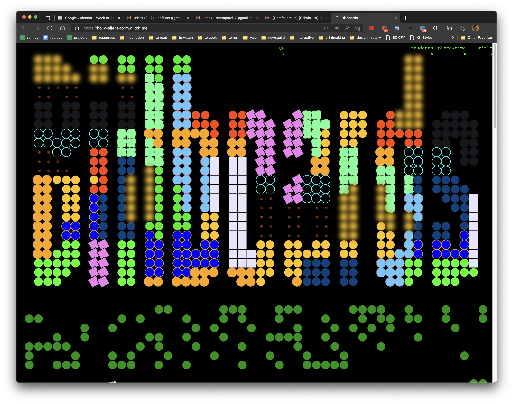
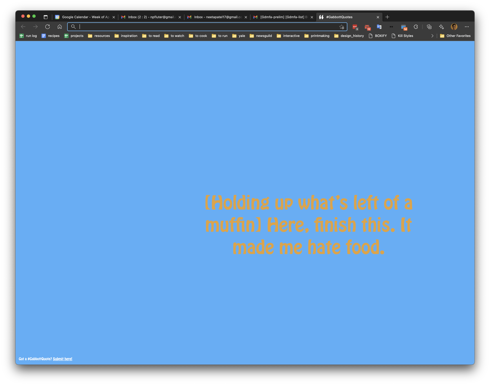
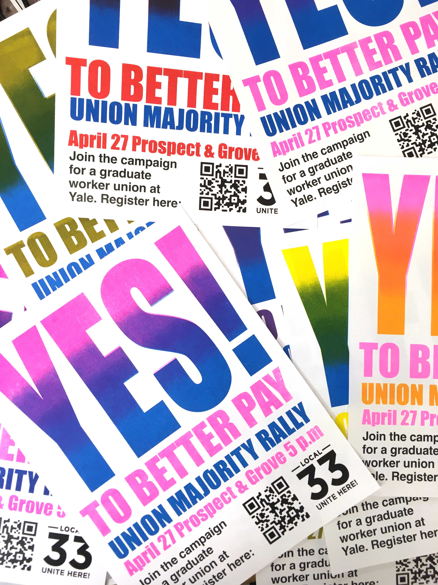
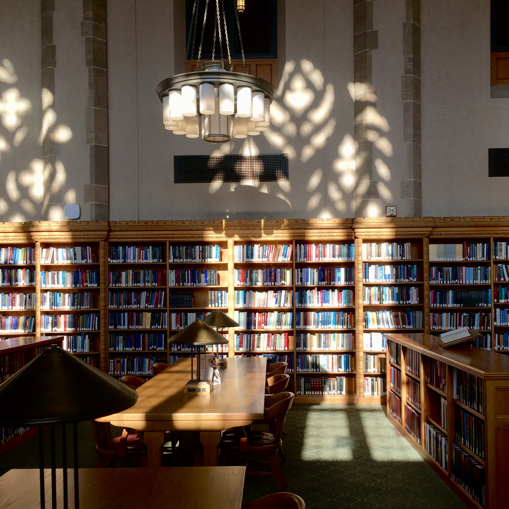
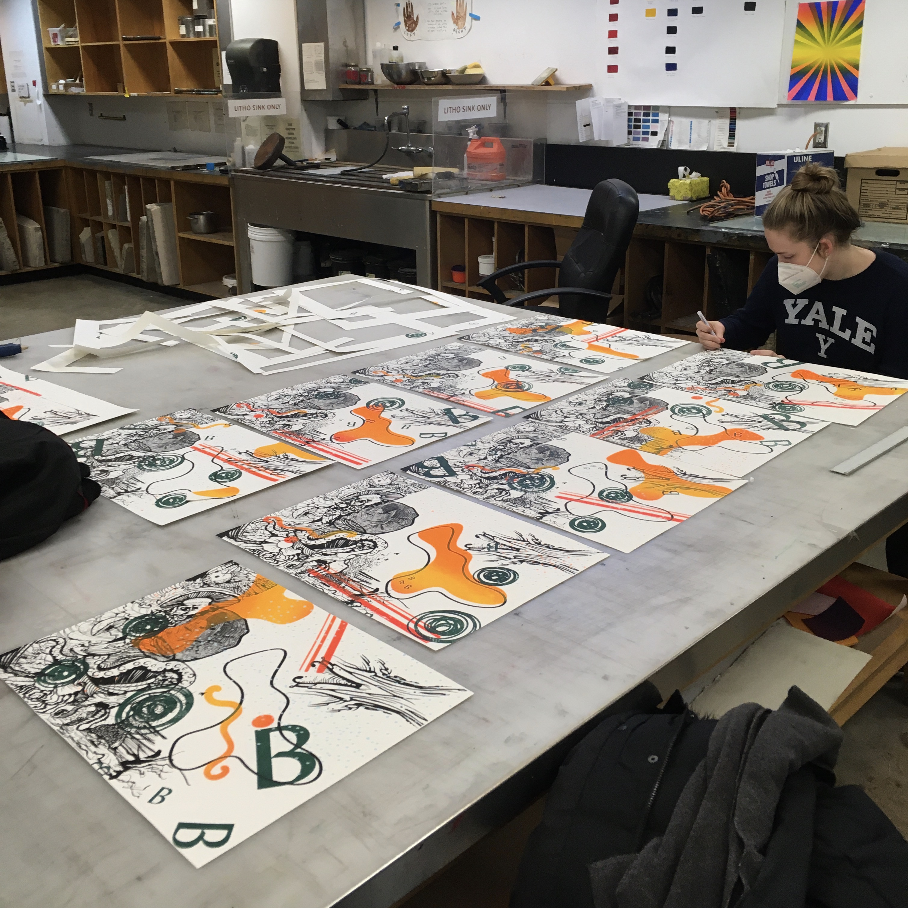
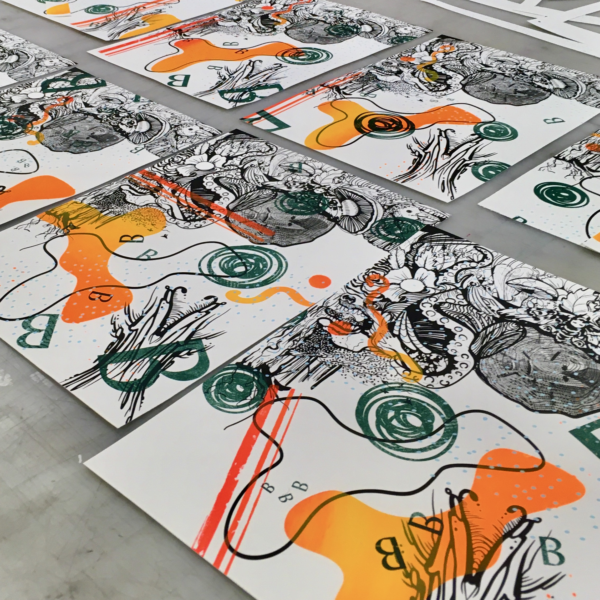
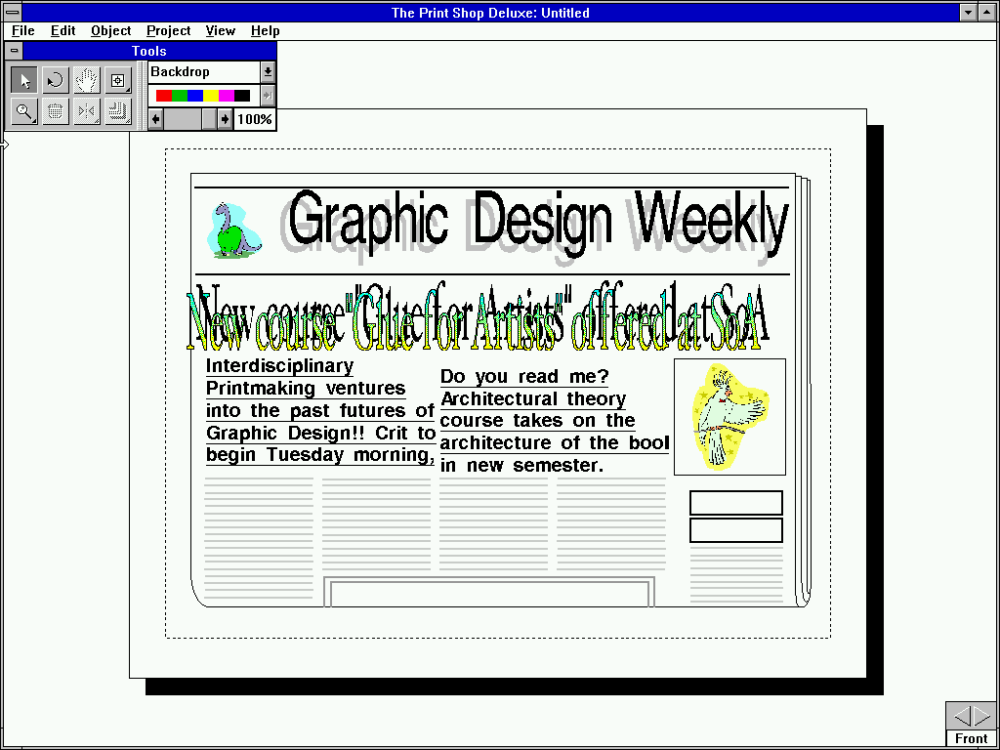
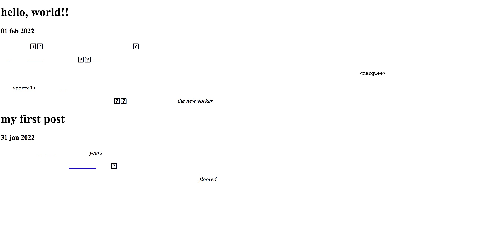
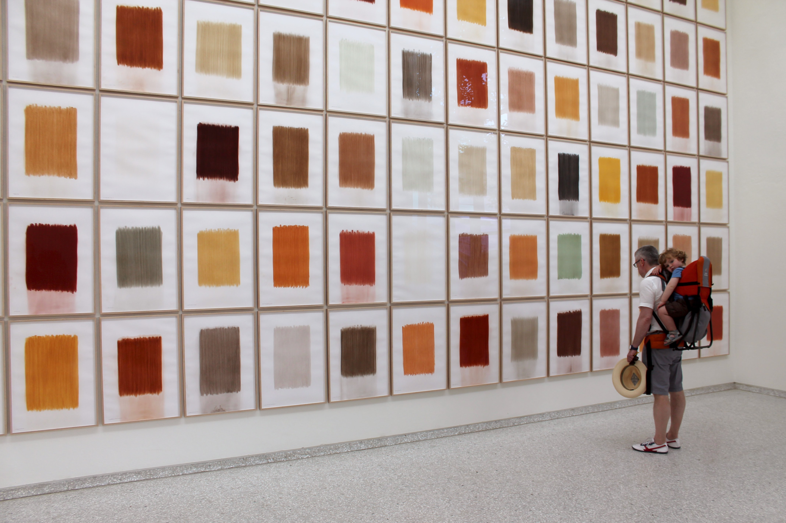
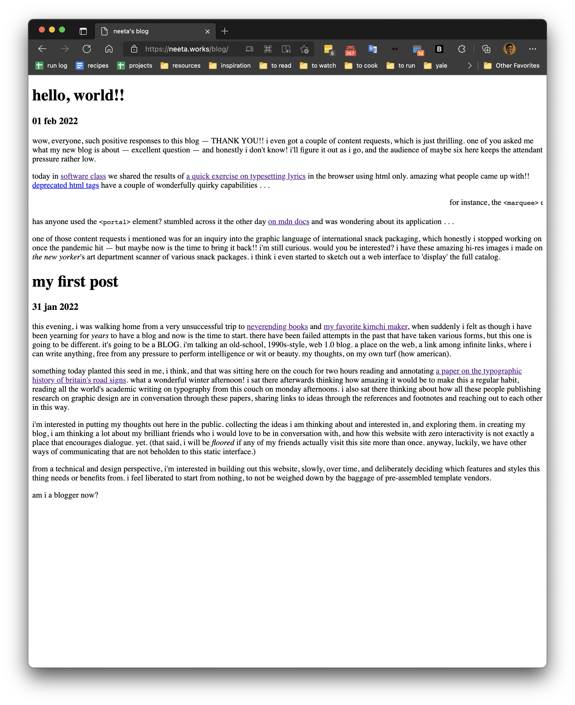

this morning i was at the opthalmologist getting my eyeballs throroughly inspected. about an hour into residents upon residents poking at my numbed eyes, dr. n— finally came into the room to begin the official procedures. she flitted between my eyes and the computer at my elbow, furiously typing notes as she explained my organs to me. upon discovering i am a graphic designer, dr. n— thought i might be interested in the interface she was using to diagram her findings. i put my glasses on and leaned towards the screen. i swear to god, it looked like dr. n— was using microsoft paint to document her world-class retinal specialist knowledge about my eyes. MICROSOFT PAINT. complete with a rgb swatch-only color palette and spray paint tool. i thought for sure the combination of dilation and numbing drops must be severely disturbing my vision. but no, there she sat awkwardly using the mouse to draw rudimentary fuschia lines and cyan circles to indicate where my retina is torn and which areas we need to monitor. apparently, this software is called 'epic kaleidoscope' (apt), and this is nothing less than the industry standard for opthalmology medical records. i wish i had taken a picture! complex information systems, like medical records, and american tax documents, have always fascinated me, despite their seemingly boring costumes. what a crazy design question to try to answer, or make more transparent, or more functional. or, in the case of dr. n—'s epic software, more amenable to the types of information those records need to hold.
if you're in or around new haven tomorrow, there's a quick exhibition called 'billboards' from 2-4 pm in the basement of green hall, downtown. my 'software for the people' class is showcasing our final projects, websites that respond to the following prompt: Make a website that serves as a billboard for a community of people that you consider yourself a part of. Design and build a site that collects and displays user submissions. Check out this SUPER AWESOME POSTER-WEBSITE by first-year jisung park!!

shrink and grow the width of your browser window to reveal the content on the billboards exhibition poster-website.
we styled the site collaboratively, on glitch, each student setting the css for their assigned grid area. all of our dot styles come together at the top of the page to form the title of the show. we've looked at so many interesting websites together in this class, and this one definitely takes the cake.
my billboard project is a browser extension called #GabbottQuotes. you can downlaod the zipped files here, with a readme containing instructions on how to install the extension in chrome and miscrosoft edge! (please tell me what you think if you get this installed!) (sorry this doesn't work for safari.)
my dear, dear friend gabby abbott says the most amazing, crazy, hilarious things. we used to work together, and i used to write them down. when i moved away, our friends started a group text thread so they could keep me updated on the beautiful things gabby continued to say. i've diligently been transcribing these #gabbottquotes into a google sheet, hoping one day to make a book of them, or a screensaver! this project felt like an opportunity to finally bring her words to life. i included a little submission link at the bottom of the page for friends of gabbott to directly upload her words, too.

ha ha. there's 120 more where these came from!! get yourself the extension for endless laughs.
thank you, gabby, for allowing me to bring your words and spirit into the classroom these last couple of weeks!
live from the riso room
23 april 2022
(not actually live as it's 10:54 pm and i am typing this from my bed, but the sentiment is an appropriate level of exciting, don't you think?)

solidarity to all the grad students pushing for better working conditions here at yale. come support them at the rally wednesday afternoon if you're in town! we'll be blitzing campus with these beauties on monday . . . thanks to a happy accident / human color separation error, i produced 2x more than i had planned to (LOL).
check out that sweet, sweet registration
thinking about graphic output
19 april 2022
the great reminder of today, from the printshop as most great reminders are now, is that the notion of semester-time is a total construct. work that needs to be made will be made, and at its own pace (another idea i want to talk to you about in a forthcoming post). whether this work will be made in time (which, again, time isn't real) for 'final' 'critique' is less certain, but helpfully ambitious.
printmaking class today took a welcome field trip to the art & architecture library's special collections to look at book forms and print portfolios related to public address — a concept we are making work around ourselves (my prints are in support of the grad worker union here at yale. if you're in new haven, come out to the 'union yes' rally next wednesday!).
we looked at so many marvelous prints!!!
in particular, there was a very large portfolio of works by the artist duo sonnenzimmer. they started out making client work, poster advertisements for music performances and things of that nature. they still do mostly this type of work, it seems, but have also expanded to others types of creative, purely artistic acts. their work is so inventive and varied, i found it difficult to believe it was all produced by two people. on a technical level, their screenprinting is MASTERFUL. it reads like trickery, the way they achieve dynamic color combinations and incredibly precise overprinting with the use of just two screens. their work feels improvisatory, but it most certainly is not, or at least not fully — because they work for clients, and are paid to create posters, they are beholden to the traditional designer-client relationship (i.e. the client approves the concept and form in advance). also, the sheer volume of their graphic output was inspiring as all hell. they recently published this 1,000 page archive of their work, and it was really something else to look at the reproductions in this tome alongside the actual edition. one of my favorite moments was looking at this piece, which our instructor described as belonging to 'the grand tradition of getting away with hobo' LMAO. (hobo is the typeface.) joyous!
a couple of the other phenomenal portfolios we discovered together: one titled 'wellspring,' centered around water rights, by the justseeds artist collective and a collection of posters that came out of occuprint during the occupy wall street movement. the designer-organizer in me was floored by the immediacy of the political prints and the graphic legacies a lot of artists tapped into. for instance, this phenomenal poster / gif by artist josh macphee that pays homage to the prints that came out of the student protests in 1960s paris, and the ateliers populaire they organized. coincidentally, just touched on these ideas around the graphic output of upheaval in design history as well — really motivating to see these artifacts firsthand as i also try to create image and type that has the capacity to activate.
tomorrow is a day largely spent in the printshop producing riso posters for the union's rally. hope to return here with documentation!
sole / soul
15 april 2022
hi, team. many moons have passed, and it's not entirely clear to me how, or why. anyway, plenty to catch up on in the near future. for now, i present to you a prospectus i whipped up the other week for my final project in interdisciplinary printmaking. i'm pretty interested in the ideas i'm thinking about here, and so far this prospectus has been pretty generative for me — an accumulation of forms and a journey into the unknown (collagraphy, anyone?). yesterday, i was in the printshop literally sawing through my running shoes, ha ha! a liberating activity if there ever was one. curious to talk if you have thoughts! & thanks for reading :-)
As a long-distance runner, I’ve spent over a decade thinking about contact — and if not thinking about contact, then certainly feeling contact. The regular rhythm of my feet pounding against the pavement, the tens of thousands of impacts in an hour, the resulting and nearly imperceptible individual tremors running up from the earth through to my bones. For a runner, these impacts can often pile up, leading to physical damage and strain. Yet, at the same time, the cumulative effect of millions of miniature moments of violence is, for me, a state of meditative calm and lightness, a deep desire to simply be present with the air, my self, and my humanity.
I’m interested in exploring this inherent tension within the physical act of running through the medium of printmaking, where I’ve learned of a similar tension between contact and release playing out across and behind the printed page. The object of my interrogation will be my last pair of running shoes, which have accumulated 1,000 miles. The soles of the sneakers already exhibit signs of erosion, and I’m curious about running them through the press many, many times over. Can I print the soles of these shoes into oblivion? Into nothingness? Can I disintegrate them back into unformed material, or a non-topographical plane of synthetic material? As the soles of my shoes become the generative surface, not for carrying my body through space and time now, but for carrying ink, I wonder how I might be able to consider their imprint differently: what is the limit of the sole?
While I know the materials and a few of the conceptual links I want to explore in this project, the formal qualities I’ll explore are open-ended. How will composition play a role in the relationship between object and page? Running is fundamentally a linear and even programmatic process — one foot in front of the next, often under time constraints — and I wonder how recreating this repetitive act in the printshop may introduce chaos and entropy? What will this look like? And how do I negotiate this outcome with the meditative state?
I’m generally interested in making works in series, and for this piece I want to exploit the reproductive capacity possible in the printshop. I also find it interesting how, as a runner, I am inherently a planner and a strategist — my days are centered around training schedules. Similarly, and much to my joyful surprise, printers are, to a degree at least, also planners. Even on improvisatory projects, printers need to plan in order to ensure success for the unknown. Structures are built to create the potential for chaos. I would also like to set up a rigorous system or logic in which I can run with these prints.
More concretely, one idea: to produce large (40”?) abstract compositions that are composed of as many ‘randomly’ placed sole-prints as it takes to fill up the plane in a satisfactory manner. I might consider color, or color fields, in this process, though I’m tempted to work exclusively in black. I wonder if a print with 1,000 sole-prints is achievable? (Or necessary?) I wonder if creating a number of compositions (three?) would lead to varying results as the sole wears out with time and use.
to be a printmaker is to experience total mechanical failure and then say, ok, see you tomorrow.
03 march 2022
i'm pretty big on note-taking. if nothing else, taking notes is an attention-focusing tool in the moment. but it can of course be more than that. an archive, a record, a reflection, a recollection — documentation of a particular moment or train of thought. thought i'd pop my notes from this morning's printmaking critique here, verbatim, because it was amazing to me how generative the works we all presented were, and i want to remember the energy i felt in our discussion. funny to look back on these scribbles without the context of the images. and so:
TUESDAY: BRITISH ART CENTER. MEET IN SHOP.
the conditions of the studio on any given day can appear in the print itself
biomorphism
edge and seam
intentionality in use of texture, printerly legacy.
combinatory notation can help w/ practicality of improvisatory printing
combinatorial aesthetics ?? (!).
there are infintie possibilities in this medium, my god.
what are the traditions / parameters of the POSTER? advocacy, advertisement . . . . and how does this intersect with PRINT?
is post-modernism the accumulation of graphic forms?
Z-AXIS
does portrait orientation dominate?
to be a printmaker is to experience total mechanical failure and then say, ok, see you tomorrow.
YIELD.
factory-like colors.
wow, printmakers can just look at a piece and GO.
the print shop . . . deluxe
28 feb 2022
good evening, blogosphere :) hope y'all are staying warm out there.
i started off this morning in this beautiful space,

requisite image of beautiful space (yale law school at the crack of dawn)
wondering what the heck i'm going to blog at you about. as usual, tonight's theme fell into place right as i settled in with my html doc: the print shop!! a dreamscape.
i'm taking an interdisciplinary printmaking course this semester, which has been AMAZING. as a designer, i feel like you hear printing-related terms thrown around all the time (offset, digital, screen printing, riso, &c.), with no substantive training of what these processes entail — a lot!! so i'm demystifying the infinite mechanics of printing (after all, graphic design WAS printmaking for the longest time), while also learning about PRINT as its own visual language, with specific qualities and attributes. alongside working in the shop, i've been obsessed with these mellon lectures by art historian jennifer roberts. she does incredible work breaking down and lifting up the discipline for a more general audience. printmaking is a million times more than its reproductive capabilities!
this weekend, we were wrapping up our first project, a collaborative variable edition (of 10) sreenprints. collaboration is hard, communication critical, but all very rewarding. spreading the stakes around can be such a relief. sneak peek of our work for tuesday's crit:


we experiemented with every technique we could reasonably moosh into this project, including the split fountain printing using flourescent inks that results in the gradient in that orange blob. making images for the sake of making images is hard.
i spend a decent chunk of monday working for my cool new gig with the yale library special collection's digital preservation arm. i like to think of the role as digital archaeology, though the title is something like 'configuration worker.' basically, i install and configure obsolete software on virtual machines so researchers can use our emulation service to look at all sorts of goodies in the library's floppy disc and cd-rom holdings. in the process, i also get to discover and play with fun stuff like this and think about graphic design c.1994:

screenshot of the 1994 interface of the print shop deluxe cd ensemble program.
so crazy! and kind of amazing that i can do all this work through the browser. i've been thinking a lot lately about this metaphor, or translation, of the print shop to the screen. in 1994, i guess this is what that looked like. but today? this site produced for software class was a lame execution of a potentially interesting idea: what does overprinting look like in the browser?
good people of the internet:
23 feb 2022
i bring to you tonight a few links i've enjoyed lately, and one that i'm working on:
'how a book is made' — a gorgeous photoessay in classic nyt fashion. beautiful ink gets its ten minutes of fame!! (aside: i've harbored a secret dream for years about working on the floor of a printing press. as it happens, i'm literally in a printmaking class now and get to spend hours every week basically fooling around in a printshop. i should write about some of the things we're doing in there!!)
multiple formats — an amazingly cool-looking symposium about ART BOOKS and BOOK ARTS at boston university this weekend!! a few brilliant maker friends will be on some of the panels — go go go . . . it's free for the public!
very satisfying website by graphic designer jacob hoving that flips an aspect of responsive web design (the fact that browser sizes can vary) from being a point of frustration to a point of discovery.
lastly, for now, a website i'm working on for software class. the site houses an interview i conducted with gujarati-canadian type designer keya vadgama. there's a lot i want to clean up about this version, including responsiveness, playing with css blending modes for the large gujarati letterforms, and accessiblity concerns on the color palette. i also want to consider integrating the on-hover images into the text itself (perhaps in mobile view?). if you have any thoughts or reactions to this site, i'd love to hear!! i feel like it's not a bad start, but still has a journey ahead . . .
broken!
18 feb 2022
a reader sent this screnshot in a while back that i loved — the first instance of this blog, rendered incompletely in the browser (something about the universal type client software interfering with the display of default fonts? not totally sure, but it looks cool.)

a view of this blog in a browser that seems unable to render most paragraph tags.
my first post
years
?
floored
harsh . . .
16 feb 2022
hi folks! lovely to be here, truly. i just left a supremely frustrating classroom interaction that made me feel horribly othered, even after decades of being pegged as teacher's pet in classrooms of yore and navigating the associated self-consciousness. and this was a classroom full of adults, no less.
if i could let myself be a bit harsh with the room, i would have. i would've called out the interaction to state the obvious: in graduate school everyone engages with their education and learning on their own unique terms, and we should be respectful of that (unless it's actively harmful?), particularly when we are in the same room, lol! alas, i did not have the guts or the real-time criticality, so now i'm sitting in a beautiful library cooling off and telling this to a different room full of adults. arguably, a much larger one. whatever.
i told myself when i started this blog that i wouldn't write too personally, and that i'd learn about the fuzzy boundaries between the personal, the private, and the public via this platform, where i can delineate those boundaries without the interference of an alogrithm. but, i decided to open with this experience from not even an hour ago because it turns out it relates quite well to what i came here to write about: a different kind of harsh. harsh patel!
harsh patel (b. 1981, nairobi) is a graphic designer in los angeles who has been working for about 20 years or so. i've recently discovered his work thanks to the internet. he gave a virtual talk today with a cool, new design m.a. program in estonia, and it was streamed live for the public.
unlike most design lectures, harsh did not present his shiny work. instead, he led a discussion on: EDUCATION and THE CLASSROOM and REPRESENTATION and how his experience as a designer who primarly works on small jobs informs and complicates his relationship to each of those things. for instance, the fact that he does not have an mfa made it difficult for him to find a position as an educator in an institution. so, he teaches night classes on design in a local extension program, a very different context from the elite and often isolated fine arts degrees a certain class of designers have access to. teaching design history to a broad mix of students in the extension program, each with their own goals for the class, and personal and professional histories, led him to create a very decentralized method of teaching students history, where each of them is teaching the room through weekly 'reports' on design objects. the group together cycles through enough objects across time and space to start learning how to position themselves in relation to any historical visual form, regardless of who made it where. am i making sense? over the years, by assigning some of the same objects to different groups of students, he's been able to see how every person approaches the presentation from a different perspective, and he's able fold those representations into future class sessions.
that felt like a pretty cut and dry explanation of just one of the many threads harsh wove for us this afternoon. he is forthright and honest in how he speaks about design education and the shortcomings of the canon. i was so engaged by his ideas in a way that i rarely am, even here. what does it mean to be a responsible designer and educator, and person? i find myself extending that today, wondering what it means to participate responsibly in a classroom? do we have a responsiblity to the room? or is it each person for themselves, another transaction among a life full of transactions? i like to believe we can achieve a slightly more collaborative environment, where we hold a collective stake in the task at hand (which is to say, learning).
well, apparently not so.
writing :(
10 feb 2022
there is nothing i procrastinate on anymore quite as severely as i procratinate on writing. writing is AWFUL. the process is painful, start to full stop. i'm out of practice (not that i was ever in). it's like thinking in longform requires a totally different frame of mind than everything else i do, and for once i do not have the patience to endure the process. i am frozen at the keyboard in fear of everything i will bungle with my words, even though the only people reading this paper will be me, my very supportive teacher, and my one anglophile friend. help! do you have any tips or tricks i can use to get over this stupid resistance to writing? honestly, i only need to work on 1000 words — nothing!!
anyway, today in the printshop we were learning and demo-ing the screenprinting process, which begins with everyone reclaiming a used screen and cleaning it with chemicals, brushes and pressurized hoses in the wash-up room in order to remove all evidence of previously exposed liquid photo emulsion. once this is done, you can apply a fresh, thin coat of emulsion and expose it against a film containing your art work. anyway, i bring all this up mostly to say, cleaning off someone else's semesters-old calcified photo emulsion is hard, wet, manual work, and i was in the wash-up room for a while feeling extraordinarily satisfied that i could finally apply my dishwashing prowess to my practice.
glaze spectrum
09 feb 2022
the other night, i was searching for a digital design archive whose name i had forgotten, when i stumbled across this awesome website, a digital archive of ceramic glaze test tiles. i was just immediately taken by some obvious things: the overwhleming array of color, the tiling, the materiality on screen, and the ease of use of the site overall. i love how you can zoom in and see the details of each tile as well — feels a little archaeological.
the website reminded me of this work from the 2015 venice biennale that i will never forgot: global earth rubbings by dutch artist herman de vries.

i've been thinking a lot about websites lately (obviously). thanks to software / interactive class this semester, i've had a chance to re-read an encouraging website manifesto by laurel schwulst, titled "my website is a shifting house next to a river of knowledge. what could yours be?" laurel makes a strong case for artists in particular to have personal websites, not merely as static archives of work, but as a space that can complement an existing practice. in her own words:
my favorite aspect of websites is their duality: they’re both subject and object at once. in other words, a website creator becomes both author and architect simultaneously. there are endless possibilities as to what a website could be. what kind of room is a website? or is a website more like a house? a boat? a cloud? a garden? a puddle? whatever it is, there’s potential for a self-reflexive feedback loop: when you put energy into a website, in turn the website helps form your own identity.
(i was luckly enough to take laurel's fruitful.school web publishing course before the pandemic hit. here's what i made.)
words matter
05 feb 2022
today, a couple of friends pointed me to this brilliantly constructed piece by minami funakoshi, about gender in languages across the globe. you should read it.
this past week in software class, we suggested and discussed a few tropes of web design today. one of those was the use of parallax, that effect on websites when the 'foreground' scrolls at a different rate than the 'background,' creating a sense of perspective. you see this commonly on apple's website, for example. (although, now that i look more closely, maybe whatever apple is doing in this example is a bit more complex than parallax? not sure.) anyway, in that conversation, a point was made that parallax is overused on the internet these days, to the point of meaninglessness. but, in instances when parallax is used with intention, that subtle motion and introduction of time within the interface can be super effective.
'gender & language,' aside from being something you should read because of its content, strikes me as another really nice use of parallax. funakoshi and the entire team behind this clearly invested a lot of time, energy, and intelligence in the project. i like how the site's design respects and elevates that dedication by feeding content to the reader slowly and more intentionally than if it were presented as one long text. the act of scrolling allows for a slight mental pause as the story builds point by point. i also enjoyed the moments where the background is employed to convey multiple phrases, or multiple voices, building up.
reading this article about the gendered nature of so many languages, and attempting to write about its design, i'm left thinking about the implicitly gendered worldview of visual language, as well. more to uncover here.
happy friday!!
04 feb 2022
at risk of this blog becoming a chronicle of all my unsuccesful journeys around new haven of late, i'd like to start off by saying that i've just returned from an unsuccesful trip to bradley street bike co-op (henceforth bsbc). if you're reading this from new haven, and you like bikes, or want a bike, or need a bike, you should come on down!! bsbc is doing amazing things in the community here, and they've grown so much over the last year. desperately want to be a regular member — must get myself over there next time they have a wtf (women trans femme) volunteer night!! more on that another time.
it might be interesting to attempt collecting the states of this site as i style it and build it moving forward. for now, a screenshot of the last state will do, while i carry on with styling this one:

screenshot of the vanilla state of this blog website on 04 february 2022.
first thing's first — definitely need to reduce the measure. maybe add some basic color and organization while i'm at it. my tendency when typesetting is to left-align elements, but i want to try centering these blocks for a change. oh, and before anything else, i want to reset all styles. i recently discovered normalize.css as a popular reset option, but i'm a bit intimidated to use it before really understanding everything that it does to browser defaults.
hello, world!!
01 feb 2022
wow, everyone, such positive responses to this blog — THANK YOU!! i even got a couple of content requests, which is just thrilling. one of you asked me what my new blog is about — excellent question — and honestly i don't know! i'll figure it out as i go, and the audience of maybe six here keeps the attendant pressure rather low.
has anyone used the <portal> element? stumbled across it the other day on mdn docs and was wondering about its application . . .
one of those content requests i mentioned was for an inquiry into the graphic language of international snack packaging, which honestly i stopped working on once the pandemic hit — but maybe now is the time to bring it back!! i'm still curious. would you be interested? i have these amazing hi-res images i made on the new yorker's art department scanner of various snack packages. i think i even started to sketch out a web interface to 'display' the full catalog.
my first post
31 jan 2022
this evening, i was walking home from a very unsuccessful trip to neverending books and my favorite kimchi maker, when suddenly i felt as though i have been yearning for years to have a blog and now is the time to start. there have been failed attempts in the past that have taken various forms, but this one is going to be different. it's going to be a BLOG. i'm talking an old-school, 1990s-style, web 1.0 blog. a place on the web, a link among infinite links, where i can write anything, free from any pressure to perform intelligence or wit or beauty. my thoughts, on my own turf (how american).
something today planted this seed in me, i think, and that was sitting here on the couch for two hours reading and annotating a paper on the typographic history of britain's road signs. what a wonderful winter afternoon! i sat there afterwards thinking how amazing it would be to make this a regular habit, reading all the world's academic writing on typography from this couch on monday afternoons. i also sat there thinking about how all these people publishing research on graphic design are in conversation through these papers, sharing links to ideas through the references and footnotes and reaching out to each other in this way.
i'm interested in putting my thoughts out here in the public. collecting the ideas i am thinking about and interested in, and exploring them. in creating my blog, i am thinking a lot about my brilliant friends who i would love to be in conversation with, and how this website with zero interactivity is not exactly a place that encourages dialogue. yet. (that said, i will be floored if any of my friends actually visit this site more than once. anyway, luckily, we have other ways of communicating that are not beholden to this static interface.)
from a technical and design perspective, i'm interested in building out this website, slowly, over time, and deliberately deciding which features and styles this thing needs or benefits from. i feel liberated to start from nothing, to not be weighed down by the baggage of pre-assembled template vendors.